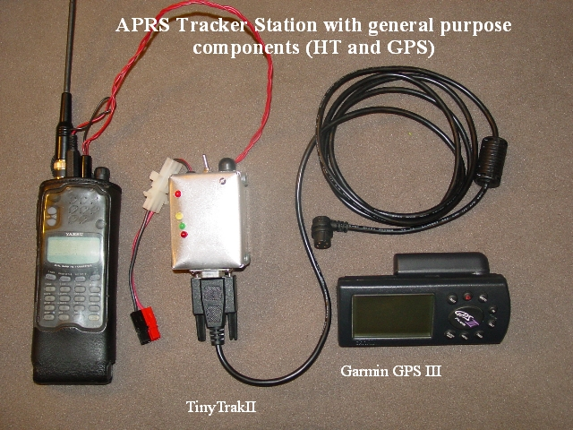

Notes:
My first try at an APRS tracker, using the TinyTrakII as a TNC, with a general purpose GPS and radio (a Yasesu 2m/440 dual band HT).
This station worked fine, until it got put in a backpack where connections invariably came loose.